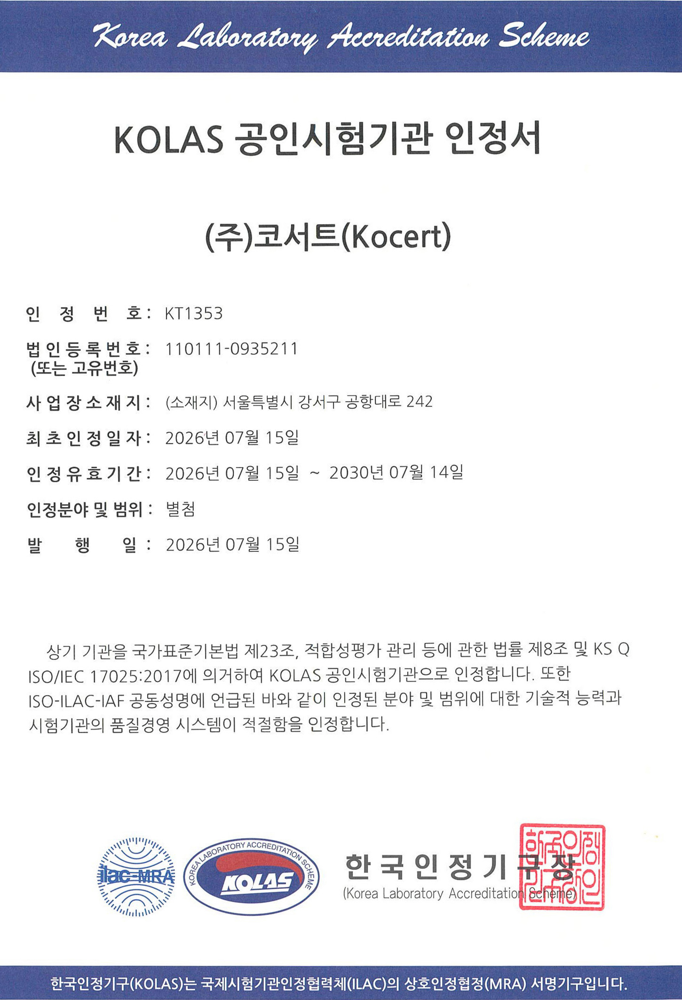
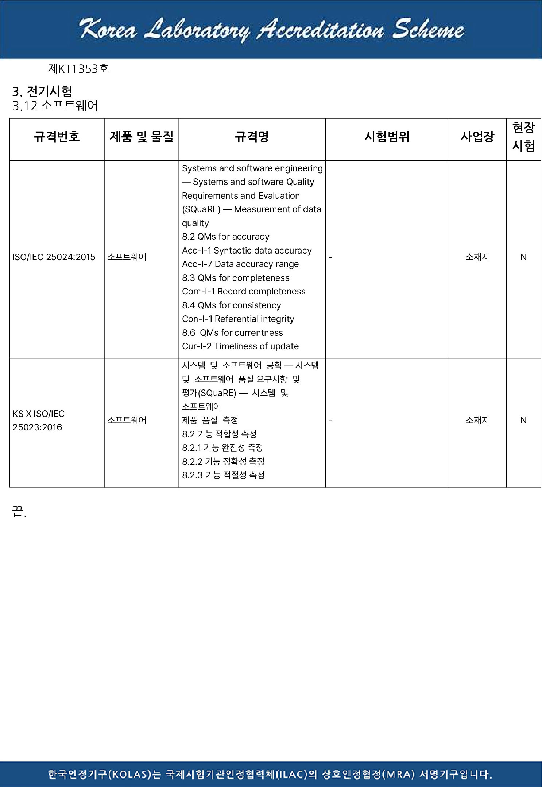

회사소개
믿음과 신뢰를 바탕으로
기업과 함께 성장하는
공인시험기관 (주)코서트
(주)코서트는 KOLAS 공인시험기관(인정번호 KT1353)입니다. 소프트웨어 기능적합성과 데이터 품질은 직접 시험해 공인시험성적서를 발급하고, 공인 규격 밖의 항목은 의뢰자 제시 방법의 일반시험으로 측정합니다. GS·KC·클라우드서비스 확인제 인증은 대상 판별부터 심사 대응까지 코서트가 직접 진행합니다.
- 법인명
- (주)코서트 (Kocert Co., Ltd.)
- 대표
- 박재준
- 사업 영역
- 공인시험(KOLAS 공인시험성적서 발급) · 일반시험(V&V, 의뢰자 제시 시험) · GS · KC · 클라우드서비스 확인제 인증 진행
- KOLAS 인정
- 공인시험기관 KT1353 · 2026.07.15 – 2030.07.14 · 소프트웨어(데이터 품질 ISO/IEC 25024, 기능적합성 KS X ISO/IEC 25023)
- 소재지
- 서울특별시 강서구 공항대로 242, 1214호(열린M타워) (5호선 발산역 8번 출구 도보 2분)
- 연락처
- 02-6012-0821 · kocert821@kocert.net

한 곳에서 끝난다는 말을
절차로 증명합니다
견적 확인 → 계약 진행 → 시험 접수 → 시험신청서·시험절차서 작성·제출 → 시험 진행 → 시험성적서 발급. 인정 범위 안의 시험은 코서트가 직접 하고, 범위 밖은 일반시험(V&V)으로 진행하며 모든 단계를 코서트 담당자가 한 창구에서 안내합니다.
20초로 보는 코서트
시험부터 인증까지, 한 곳에서
과제 목표가 성적서와 인증서가 되기까지의 여섯 단계를 20초에 담았습니다. 무음이며 자막으로 읽을 수 있습니다.
회사소개
품질방침
KS Q ISO/IEC 17025 요구사항과 KOLAS 운영규정에 따른 품질경영체계
(주)코서트는 다음의 품질방침에 따라 시험업무를 수행합니다.
- (주)코서트는 공정성과 신뢰성을 확보한 시험업무 수행을 통해 고객에게 최상의 시험 서비스를 제공한다.
- (주)코서트는 KS Q ISO/IEC 17025 요구사항과 KOLAS 운영규정을 충족하기 위한 품질경영체계를 준수하며, 경영진은 해당 시스템의 구축·운영을 책임지고 그 효과성을 지속적으로 향상시킨다.
- (주)코서트의 임직원은 지속적 교육과 역량 개발을 통해 업무 전문성을 높이고 결과의 신뢰성을 확보한다.
- (주)코서트는 고객 요구를 적절히 충족시키기 위해 필요한 자원을 적극 제공한다.
(주)코서트 대표이사 박재준
공인 제도
KOLAS 인정서
2026년 7월 KOLAS 공인시험기관(KT1353)으로 인정받았습니다. 인정 범위 안의 항목은 코서트가 직접 시험해 성적서를 발급하고, 범위 밖의 항목은 코서트가 일반시험(V&V)으로 진행합니다. 모든 공인 성적서는 ILAC-MRA 상호인정으로 해외에서도 통용됩니다.

KOLAS 공인시험기관 인정서 · 인정번호 KT1353 · 유효기간 2026.07.15 – 2030.07.14

인정분야 및 범위 · 소프트웨어: ISO/IEC 25024:2015 데이터 품질(정확성·완전성·일관성·현재성), KS X ISO/IEC 25023:2016 기능적합성(완전성·정확성·적절성)
공평성 선언서
시험의 공평성을 선언합니다
KS Q ISO/IEC 17025:2017 제4.1항(공평성)에 따른 선언
(주)코서트 경영진은 시험기관의 활동이 공평하게 수행되도록 다음과 같이 선언합니다.
- 시험 활동은 상업적·재정적·기타 압력으로부터 독립적으로 수행하며, 시험 결과의 공평성을 훼손하는 어떠한 영향도 허용하지 않습니다.
- 공평성을 해칠 수 있는 위험을 지속적으로 식별하고, 식별된 위험은 제거하거나 최소화합니다.
- 시험 업무에 종사하는 모든 인원은 의뢰자와의 이해관계를 사전에 밝히며, 이해상충이 있는 시험에는 관여하지 않습니다.
- 시험 결과는 객관적 근거에 따라서만 판정하며, 의뢰자의 요청이나 기대에 따라 결과를 조정하지 않습니다.
- 의뢰자의 정보와 시험 결과는 비밀로 유지하며, 법령에 따른 경우를 제외하고 제3자에게 공개하지 않습니다.
(주)코서트 대표이사 박재준 · 선언일 2026. 07. 15.
※ 본문은 코서트 확정 문안으로 교체 예정.
오시는 길
발산역 8번 출구에서 도보 2분
서울특별시 강서구 공항대로 242, 1214호(열린M타워). 5호선 발산역 8번 출구로 나와 공항대로를 따라 2분이면 도착합니다.
- 주소
- 서울특별시 강서구 공항대로 242, 1214호(열린M타워)
- 지하철
- 5호선 발산역 8번 출구 도보 2분
- 주차
- 건물 주차장 이용 (방문 전 연락 주시면 안내)
- 전화
- 02-6012-0821
- 이메일
- kocert821@kocert.net